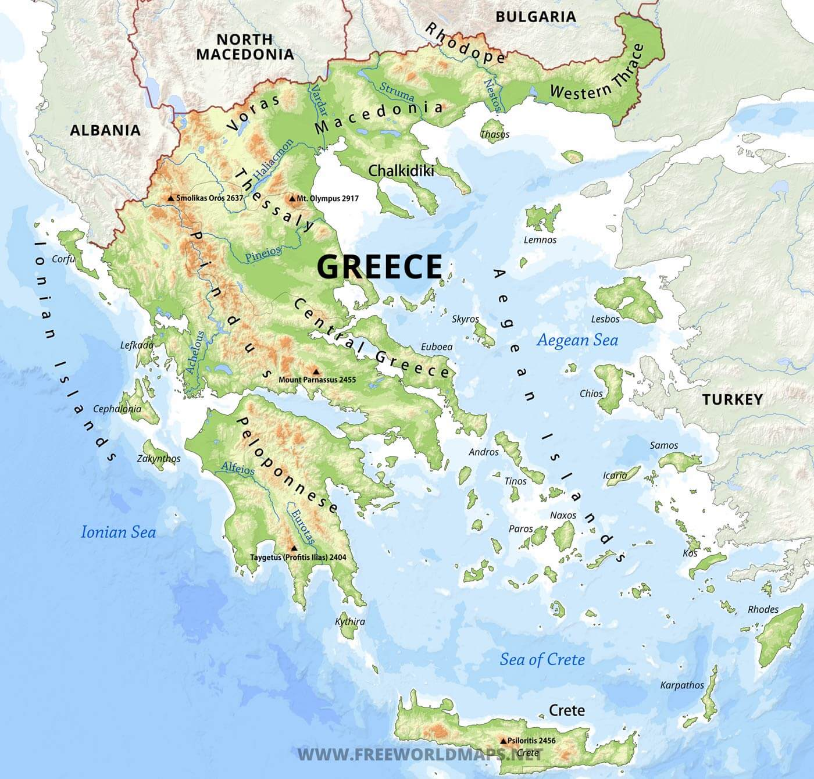

Relieful
Grecia este formată dintr-o parte continentală muntoasă
și peninsulară, întinzându-se în mare în capătul sudic al Peninsulei
Balcanice, terminându-se cu Peninsula Pelopones (separată de restul
continentului printr-un canal prin Istmul Corintului). Datorită coastei
deosebit de complexe și datorită numeroaselor insule, Grecia are a
unsprezecea cea mai lungă coastă din lume, cu 13.676 km; frontiera sa
terestră este de doar 1.160 km. Țara se află aproximativ între paralelele
de 34° și 42° latitudine nordică, și între meridianele de 19° și 30° longitudine estică.
Grecia are un număr mare de insule, între 1.200 și 6.000, în funcție de definiție,
dintre care 227 sunt locuite. Creta este cea mai mare și mai populată; Euboea, separată de
continent prin Strâmtoarea Euripus lată de 60 m, este a doua ca mărime, urmată de Rhodos și Lesbos.
Insulele grecești sunt grupate prin tradiție în următoarele arhipelaguri:
Insulele Argo-Saronice din Golful Saronic de lângă Atena, Cicladele, o colecție
mare dar densă ce ocupă partea centrală a Mării Egee, Insulele Egeene de Nord,
o grupare aproximativă aflată în largul coastei vestice a Turciei, Dodecanezele,
o altă mulțime vagă de insule din sud-est, aflate între Creta și Turcia, Sporadele,
un grup mic și compact în largul coastei Euboeei de nord-est, Insulele Ionice, aflate
la vest de continent în Marea Ionică.
 Optzeci la sută din teritoriul Greciei este format din munți și dealuri, ceea ce
face țara să fie una dintre cele mai muntoase din Europa. Muntele Olimp, sălașul mitic
al zeilor greci, culminează cu vârful Mytikas 2.917 m, cel mai înalt din țară. Grecia vestică
are mai multe lacuri și zone umede și este dominată de Munții Pindului. O continuare a
Alpilor Dinarici, acest lanț atinge o altitudine maximă de 2.637 m în vârful Smolikas
(al doilea din Grecia), și de-a lungul istoriei a constituit o importantă barieră împotriva
transportului dintre est și vest.
Optzeci la sută din teritoriul Greciei este format din munți și dealuri, ceea ce
face țara să fie una dintre cele mai muntoase din Europa. Muntele Olimp, sălașul mitic
al zeilor greci, culminează cu vârful Mytikas 2.917 m, cel mai înalt din țară. Grecia vestică
are mai multe lacuri și zone umede și este dominată de Munții Pindului. O continuare a
Alpilor Dinarici, acest lanț atinge o altitudine maximă de 2.637 m în vârful Smolikas
(al doilea din Grecia), și de-a lungul istoriei a constituit o importantă barieră împotriva
transportului dintre est și vest.
Munții Pindului continuă în Peloponesul central, trece insulele Kythera și Antikythera și ajung
până în sud-vestul Egeei, în Insula Creta unde se termină. Insulele din Egee sunt de fapt culmi
ale unor munți submarini ce au constituit odată o prelungire a continentului. Munții Pindului sunt
caracterizați de creste înalte și abrupte, adesea întretăiate de văi adânci și de alte peisaje carstice.
Spectaculoasele chei Vikos, parte din Parcul Național Vikos-Aoos din Munții Pindului, sunt trecute în
Cartea Recordurilor Guinness ca cele mai adânci chei din lume. O altă formațiune remarcabilă sunt
stâlpii de piatră Meteora, în vârful cărora au fost construite mănăstiri ortodoxe medievale.
Nord-estul Greciei are alți munți de altitudini mari, Rodopii, care se întind în regiunea Macedoniei
de Est și Traciei; zona ese acoperită cu întinse păduri seculare, inclusiv celebra pădure Dadia din unitatea
regională Evros, din nord-estul extrem al țării.
Câmpii întinse sunt amplasate în principal în regiunile Tesalia, Macedonia Centrală și Tracia.
Ele constituie regiuni economice-cheie, fiind printre puținele zone cu terenuri arabile. Specii
marine rare, cum ar fi focile și țestoasele de mare, trăiesc în mările din jurul Greciei
continentale, în timp ce densele sale păduri sunt habitat pentru ursul brun, râsul, căprioară și capră sălbatică.